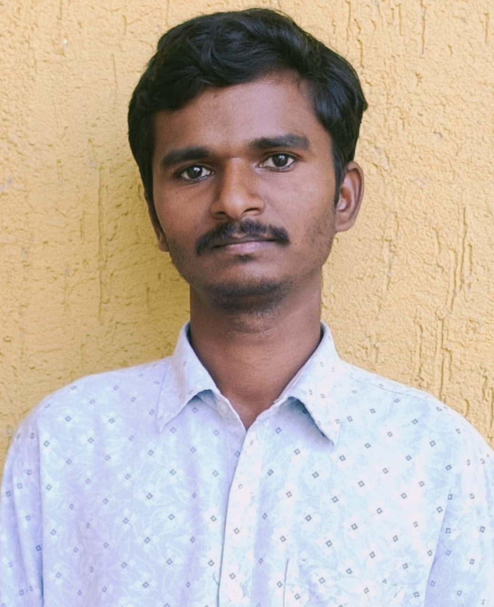
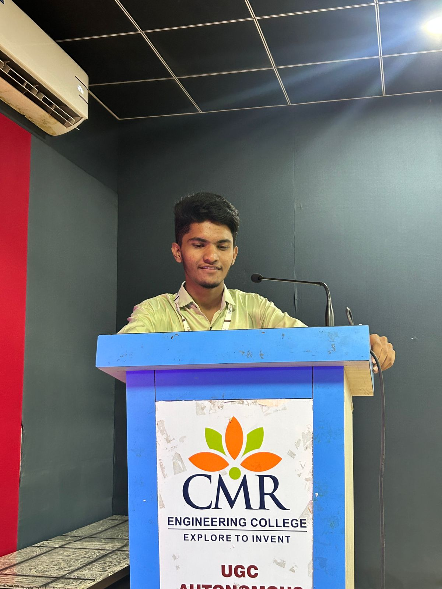
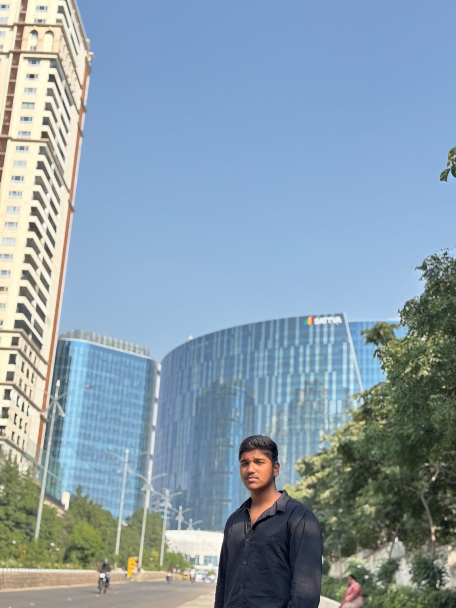
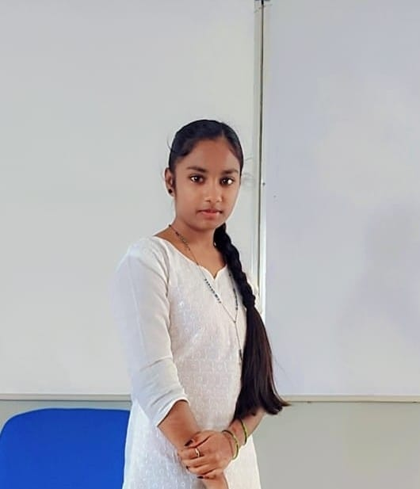

Speak with our platform to report village problems quickly and easily. Citizens can share concerns directly with the responsible authorities..

Your reports are forwarded to the concerned government departments. We help connect citizens and officials for faster solutions.

Track the status of your complaint in real time. Stay informed with updates until the issue is resolved.

Together we build better villages through active participation. Citizen voices help create cleaner, safer, and smarter communities.